Using a Map View Interface to Select and Locate System Objects
Maps in the Object selector can be used to locate and select system objects by using a Map View interface. Coordinates for a system object need to be filled in to display on the Map View interface.
The base layer for the Map View Interface used is open street maps.
To use a Map View interface to locate and select a system
In the WAB, navigate to a section that has an object selector, and click Show Map View.
When using the Map View interface for the first time a prompt will display asking you to share your location. Click Allow. The Map View Interface will display your current location, along with objects nearby.
The types of objects that appear on the Map View interface is based on what is selected in designer mode (Division, Facility, Unit, and/or POI)
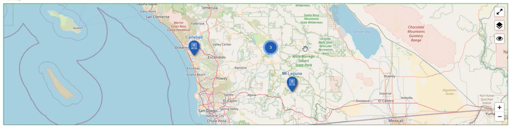
If there are multiple objects near one another, and depending how zoomed out you are on a map, a circle icon with a value will display indicating the number of objects in that area.
To zoom out of a map, you can either:
Click the - icon at the bottom left of the Map View Interface.
On your laptop mouse pad, place two fingers apart and slide them together.
On a mobile device, place two fingers apart on the screen and slide them together.
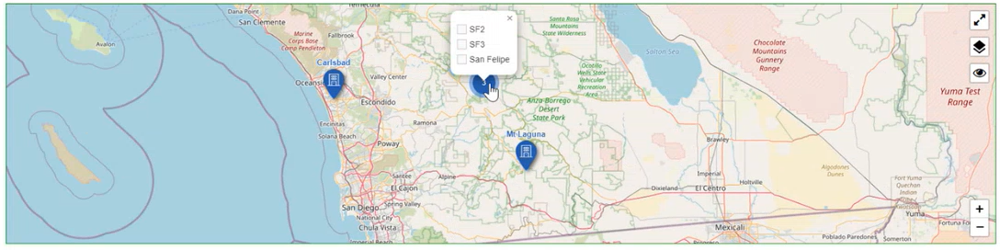
You can hover over the circle icon with a value, and a list of facilities will display.
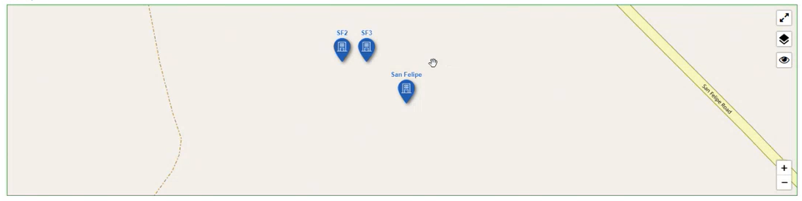
As you zoom in you will be able to view the separate system objects in that area.
To zoom into a map, you can either:
Click the + icon at the bottom left of the Map View Interface.
On your laptop mouse pad, place two fingers and slide them apart.
On a mobile device, place two fingers on the screen and slide them apart.
To select a system object on a Map, click the upside-down tear drop icon. An orange checkmark will be displayed on the object icon. The selected object will appear in the Facility textbox.
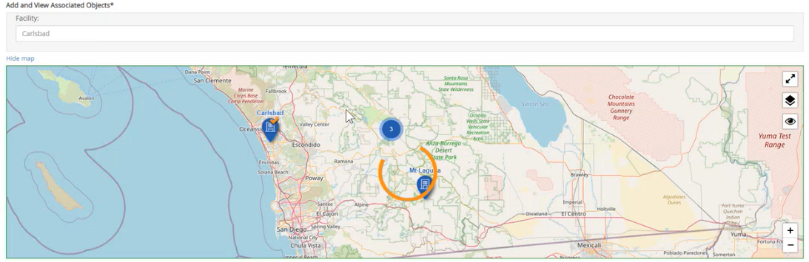
Multiple system objects can be selected on the Map View interface, if Allow Multiple is selected in designer mode.
To select a system object on a Map that has multiple objects clumped into one location:
a. Click a circle object with a number value and a list of objects will display with checkboxes in front of each object.
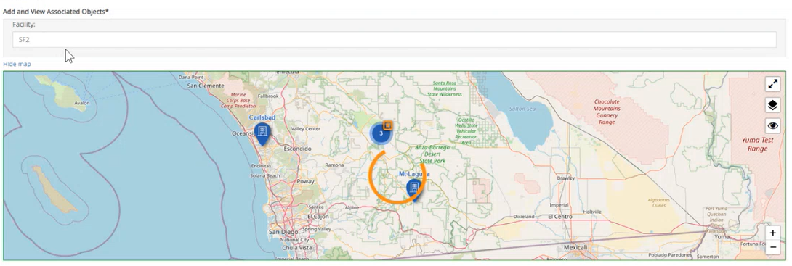
b. Select a checkbox. The selected object will appear in the Facility textbox.
Multiple system objects can be selected on the Map View interface, if Allow Multiple is selected in designer mode under Object Selector. When multiple system objects are selected on the Map View interface, they will be listed in the Object Selector textbox.
Click the Display Map Label icon so that it is turned on
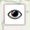
. Names of object systems appear on the map.
Click the Display Map Label
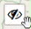
icon so that it is turned off, names of object systems are removed off the map.
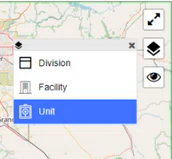
Click the Layers icon, 1 to 4 Object types may appear as a list. This depends on the number of object type selected in designer mode (division, facility, unit, and/or POI). User can narrow down to an object location by first selecting a Division, then a Facility based on the division object chosen, and then a Unit based on the Facility chosen, and finally a POI.
Coordinates for all object levels have to be inputted in system models for objects to display on the Map View Interface.
If one object type was selected in designer mode then only one object type will display when the stacks icon is clicked.
Click
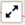
to expand the Map View Interface to full screen. Click the icon to go back to normal viewing mode.
This is particularly useful when viewing the Map View Interface on a mobile device.
To add a Display Map to an Object Selector
From the main menu dropdown, select Designer to open Forms Designer.
Click the Forms tab.
Click the Form Type dropdown textbox and select a child workflow type.
Clickthe Workflow Step dropdown textbox and select a workflow step where forms are present.
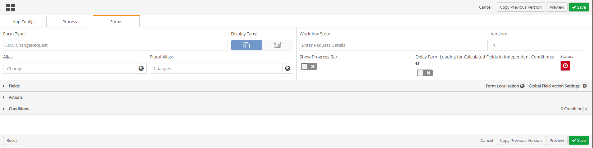
Click the Fields ribbon. The Field ribbon will expand with a menu of Field types below it, and two sections display to the right, Header Fields, and Field Sections.
Click the Object Selector ribbon, the Object Selector menu expands.
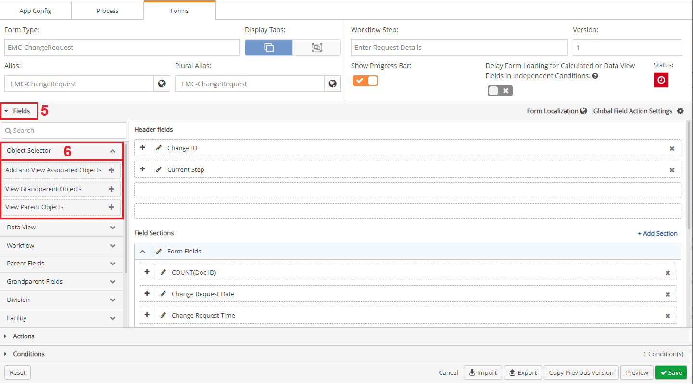
Click an Object Selector. The Object Selector is added to the bottom of the Field Sections.
Click and drag where you want to place the Object Selector field in the Field Sections.
To update the name of the Object Selector, click the Edit icon to the right of the Object Selector name.
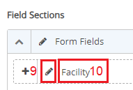
Type in the name you want the Object Selector to display.
Click the checkmark to the right of the Object Selector name textbox.
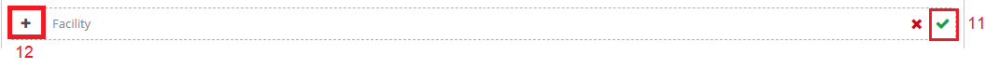
To expand the Object Selector editing window click the plus icon.
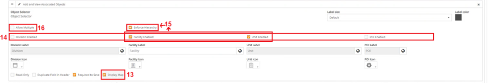
To enable the Display Map setting, click the checkbox in front of Display Map.
To edit the location level of the search results displayed on the Map, select whether you want the Object Selector to populate results that are either at the Division level, Facility level, Unit level, or POI level.
When multiple Objects are selected, select the Enforce Hierarchy checkbox so that objects of varying levels can be selected and filtered for by the varying object levels.
When Allow Multiple is selected, end user on the form can select more than one object to display on the Map. This can be used when more than one object is to be inspected.